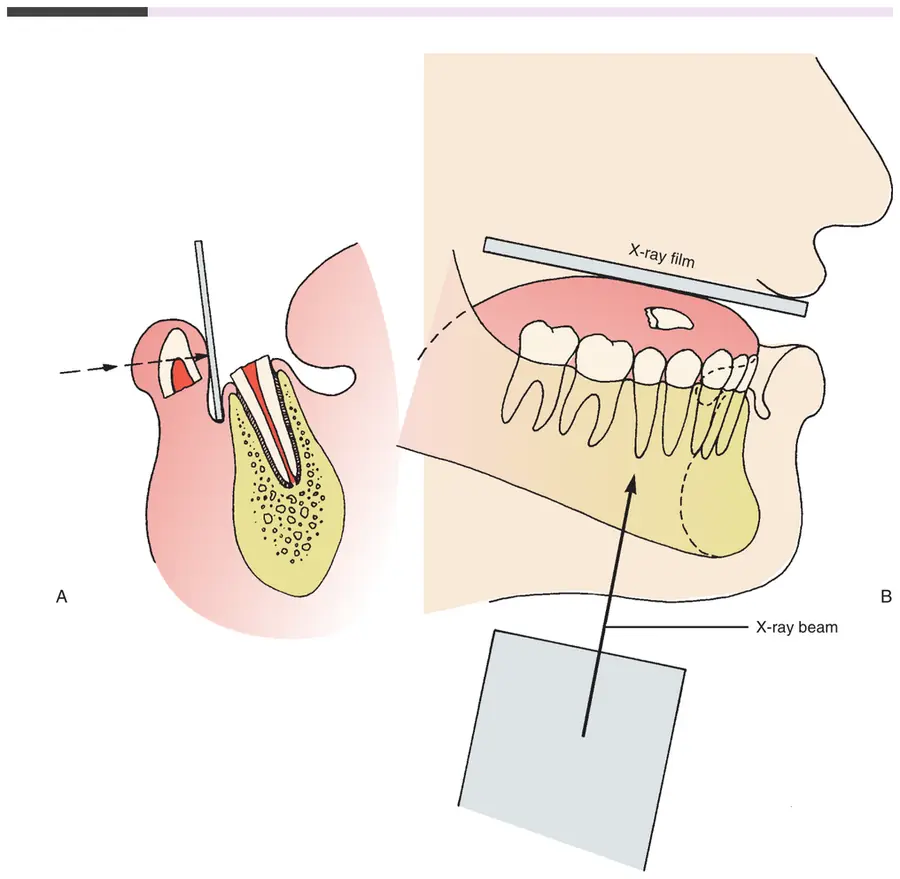
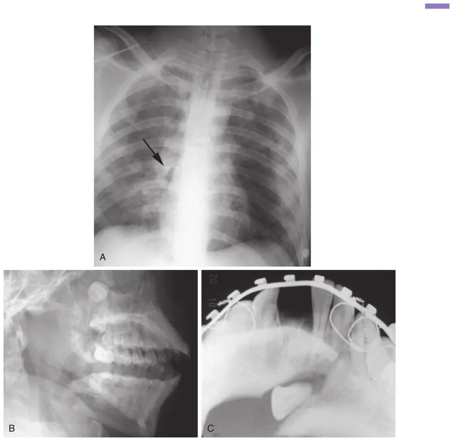

نسخه استخراجشده؛ ترجمه یا تأیید علمی انجام نشده است. وضعیت: captured
شایعترین علل آسیبهای دنتوآلوئولار و بافت نرم پیرادهانی: افتادن، تصادف وسیلهی نقلیه، آسیب ورزشی، نزاع، کودکآزاری، و حوادث زمین بازی.

و یک الگوی سنی: افتادن — که بسیاری از آسیبها را میسازد — از وقتی آغاز میشود که کودک شروع به راه رفتن میکند، و بروزش درست پیش از سن مدرسه به اوج میرسد.
و یک اصل بنیادین که کل این درس بر آن استوار است: آسیبهای دندان و زائدهی آلوئولار شایعاند و باید وضعیت اورژانس به شمار روند، چون پیامد موفق به توجه سریع به آسیب بستگی دارد. و چون درمان درست تنها پس از تشخیص دقیق داده میشود، فرایند تشخیصی باید بیدرنگ آغاز گردد.
و چهار محور شرححال:چه کسی، کِی، کجا، چگونه.
۴ — آسیب چگونه رخ داد؟ (پرسشی که بیش از همه پنهانها را آشکار میکند) ماهیت تروما، بینش ارزشمندی دربارهی آسیب بافتی محتمل میدهد.
پرسشهای ۵ تا ۸: از زمان آسیب تا اکنون چه درمانی شده (کسی دندان را جا انداخته؟ دندان در چه محیطی نگهداری شده؟)، آیا کسی دندان یا تکهی دندان را در محل حادثه دیده؟ — اگر دندانی گم شده و در محل پیدا نشده، رادیوگرافی بافت نرم اطراف دهان، قفسهی سینه و شکم لازم است، سلامت عمومی بیمار چگونه است (آلرژی دارویی، سوفل قلبی، اختلال خونریزی، داروها)؟، و آیا تهوع، استفراغ، از دست رفتن هوشیاری یا فراموشی داشته؟
و پرسش نهم که مستقیماً به معاینه راه میبرد: آیا اختلالی در اکلوژن هست؟ پاسخ مثبت به این پرسش میتواند نشاندهندهی جابهجایی دندان یا شکستگی دنتوآلوئولار یا فک باشد.
معاینهی بالینی «شاید مهمترین بخش فرایند تشخیصی» است — و همراهش یک هشدار فوری:

معاینهی کامل بیماری که به ساختارهای دنتوآلوئولار آسیب دیده، نباید تنها بر همان ساختار متمرکز شود. آسیبهای همزمان هم ممکن است حاضر باشند؛ شرححال میتواند درمانگر را به معاینهی نواحی دیگر برای نشانههای آسیب هدایت کند.
و دو ارزیابی که اغلب فراموش میشوند:
و دو ناحیهای که باید روتین معاینه شوند:
و طبقهبندی آسیبهای تروماتیک: سامانههای متعددی برای توصیف آسیبهای دنتوآلوئولار به کار میروند که همه مزایا و معایبی دارند؛ طبقهبندیای که اینجا برگزیده شده نسبتاً ساده ولی مفید است و کاملاً بر توصیف آسیب واردشده استوار است و ساختارهای دندانی درگیر، نوع جابهجایی، و جهت شکستگی تاج یا ریشه را توصیف میکند.
و دستههای جابهجایی و شکستگی:
و یک قاعدهی صادقانه دربارهی مرز توانایی خودت: پس از شرححال و معاینهی بالینی و رادیولوژیک کامل، دندانپزشک باید بتواند تعیین کند که آیا طرح درمان این نوع آسیب در محدودهی تخصص اوست. و سه موقعیت وجود دارد که میتوانند آسیبی را که در غیر این صورت جزئی است، برای دندانپزشک بهتنهایی غیرقابلدرمان کنند:
و هدف نهایی درمان آسیبهای دنتوآلوئولار: بازگرداندن شکل و عملکرد طبیعی دستگاه جونده.